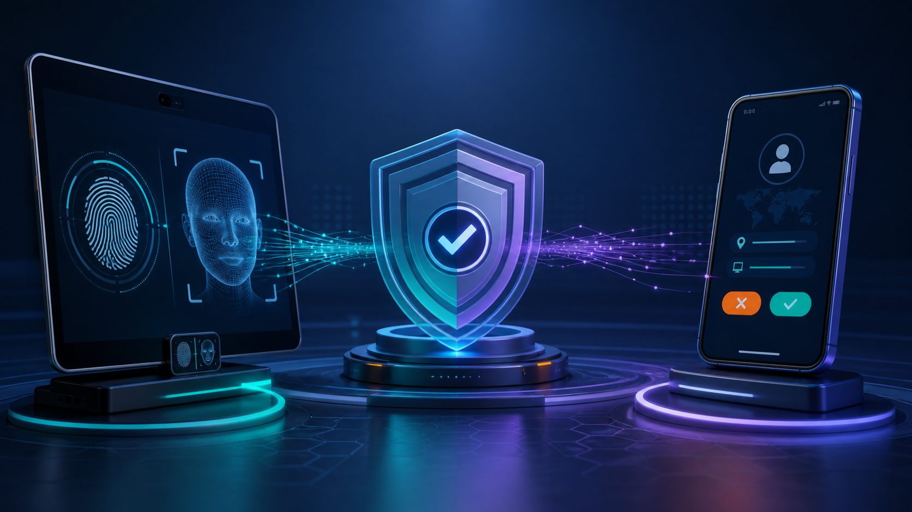
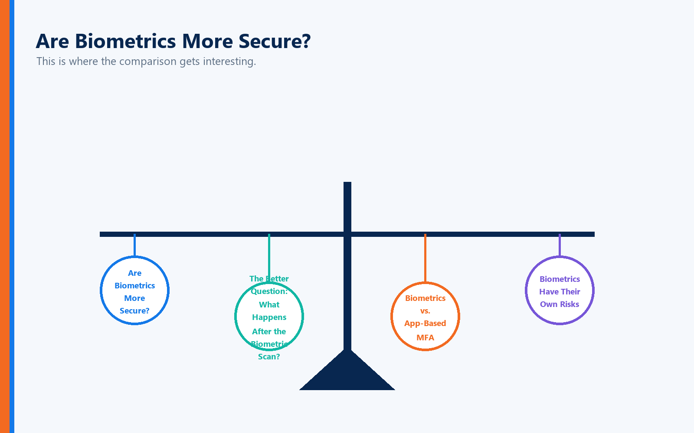
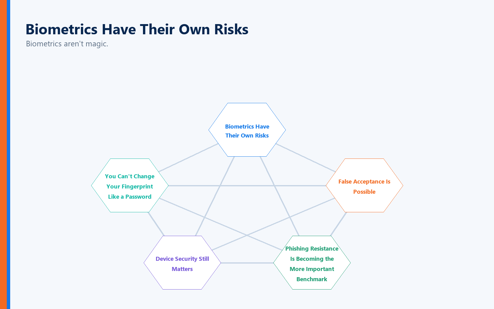
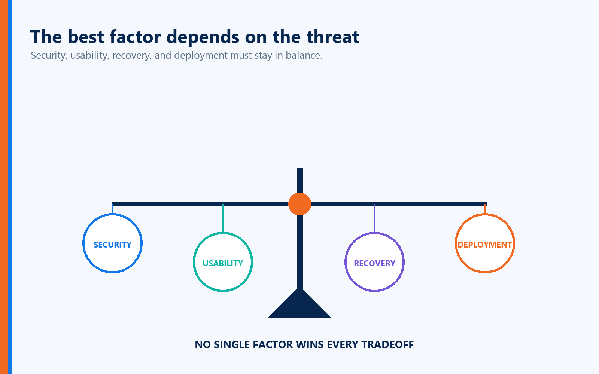
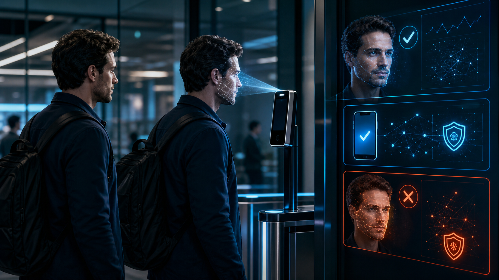
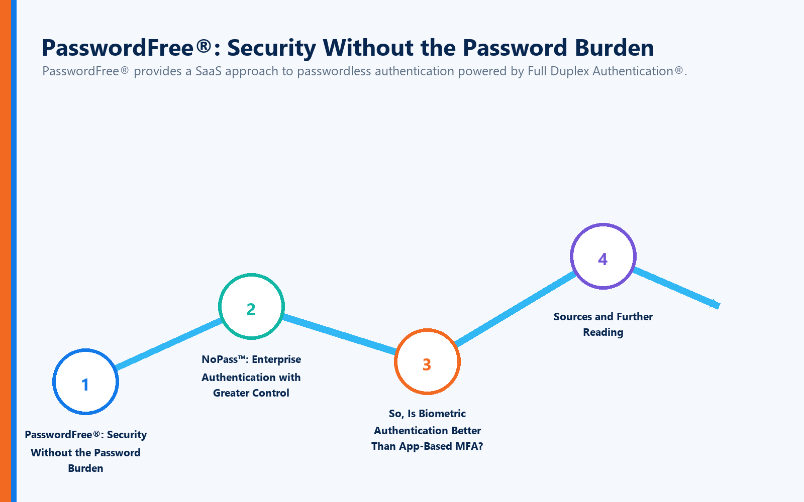

If you've ever sighed after approving yet another authentication prompt or scrambled to find your phone just to log into your email, you're not alone. Multi-Factor Authentication (MFA) has earned a reputation for being both one of the most effective cybersecurity defenses—and one of the most frustrating.
Unlock your phone? Look at the screen.
Open a banking application? Touch the fingerprint sensor.
Authorize a payment? Scan your face.
At the same time, millions of employees still authenticate to business applications by opening an authenticator app, retrieving a six-digit code, or approving a push notification.
That raises an important question:
Is biometric authentication actually better than app-based Multi-Factor Authentication (MFA)?
The short answer is: it can be—but the biometric itself isn't necessarily what makes the authentication system stronger.
To understand why, we need to look at authentication factors, phishing resistance, device security, and how modern authentication systems establish trust.
First, What Is an Authentication Factor?
Most authentication systems rely on one or more of three basic factor categories:
Something You Know
Information that should be known only by the user.
Examples include:
Passwords
PINs
Passphrases
Security codes
The obvious weakness is that knowledge can be stolen, guessed, shared, phished, or exposed in a data breach.
Something You Have
A physical or digital object associated with the user.
Examples include:
Smartphones
Security keys
Smart cards
Hardware tokens
Registered devices
Possession factors make an attack more difficult because stealing a password alone may no longer be enough.
Something You Are

A physical characteristic of the individual.
Examples include:
Fingerprints
Facial characteristics
Iris patterns
Other biometric characteristics
Biometrics can make authentication extremely convenient because the user doesn't have to remember or manually enter anything.
But convenience and security are not the same thing.
How App-Based MFA Works
App-based MFA generally uses a smartphone application as an additional authentication factor.
After entering a username and password, the user may be asked to:
Enter a time-based one-time password (TOTP)
Approve a push notification
Match a number displayed on another device
Confirm an authentication request inside the application
This is dramatically better than relying on a password alone.
Microsoft research involving commercial accounts found that MFA reduced compromise risk by more than 99% in the population studied, including substantial protection when credentials had already leaked.
That makes MFA one of the most important security improvements an organization can implement.
But there is an important qualification:
Not every MFA method provides the same level of protection.
The Weakness of App-Based MFA: The Human Is Still in the Loop
Many app-based MFA systems ultimately ask the user to make a security decision.
"Approve this sign-in?"
That sounds simple.
But attackers know how to exploit human behavior.
An attacker who obtains a user's password may repeatedly trigger authentication requests. Eventually, a distracted or frustrated employee might approve one.
This technique is commonly called MFA fatigue, push fatigue, or push bombing.
Number matching significantly improves the situation because users must match or enter information associated with the authentication session.
However, some app-based authentication methods remain susceptible to phishing.
CISA has specifically distinguished phishing-resistant MFA from app-based OTP and push methods, recommending phishing-resistant approaches such as FIDO/WebAuthn and PKI-based authentication for stronger protection.
That distinction is important.
Having multiple factors doesn't automatically make an authentication method resistant to every attack.
Are Biometrics More Secure?

This is where the comparison gets interesting.
A fingerprint cannot be forgotten.
Your face doesn't need to be reset every 90 days.
And users can't accidentally type their fingerprint into a phishing website.
That makes biometrics extremely attractive.
But saying "biometrics are more secure than MFA apps" oversimplifies the issue.
According to NIST's current Digital Identity Guidelines, a biometric characteristic is not treated as an authenticator by itself. Instead, it should be associated with a physical authenticator.
For example, consider a smartphone that stores a cryptographic credential.
The smartphone represents:
Something you have.
The fingerprint or facial recognition used to unlock that credential represents:
Something you are.
The biometric isn't necessarily being transmitted across the Internet to prove your identity. Instead, it can be used locally to authorize access to a cryptographic authentication capability on the device.
That architectural difference matters enormously.
The Better Question: What Happens After the Biometric Scan?
When evaluating biometric authentication, don't simply ask:
"Does it use a fingerprint?"
Ask:
"What does the fingerprint authorize?"
A biometric can simply unlock a device.
Or it can activate a cryptographic authenticator that securely proves possession of a credential.
Those are very different security models.
Modern authentication systems can combine:
Something you have + something you are + cryptographic proof.
That can provide a significantly stronger authentication experience than simply entering a password and copying a temporary code from an app.
Biometrics vs. App-Based MFA
Here is a practical comparison:
Security Consideration | Biometrics + Trusted Device | App-Based OTP | Push-Based MFA |
Requires remembering a password | Potentially no | Usually | Usually |
Manual code entry | No | Yes | No |
Vulnerable to basic credential theft | Low when properly implemented | Reduced | Reduced |
Phishing resistance | Can be strong when paired with phishing-resistant cryptographic authentication | No | Depends on implementation; conventional push is not inherently phishing-resistant |
MFA fatigue risk | Low | Low | Potentially higher |
User friction | Very low | Moderate | Low |
Lost-device considerations | Yes | Yes | Yes |
Depends heavily on implementation | Yes | Yes | Yes |
The most important row is the last one.
The technology surrounding the authentication factor matters as much as the factor itself.
Biometrics Have Their Own Risks

Biometrics aren't magic.
They introduce security and privacy considerations that organizations must address carefully.
You Can't Change Your Fingerprint Like a Password
If a password is compromised, you reset it.
If biometric information is compromised, replacing it isn't nearly as simple.
That makes the handling and storage of biometric information extremely important.
False Acceptance Is Possible

Biometric systems make probabilistic comparisons. They aren't simply determining whether two secret strings are identical.
Thresholds, sensors, hardware, implementation, and environmental conditions all affect performance.
Device Security Still Matters
A strong biometric authentication experience sitting on top of a compromised endpoint doesn't automatically create a secure system.
Organizations must consider the security of the entire authentication chain.
Recovery Matters
What happens if the user's phone is lost?
What happens if a fingerprint sensor stops working?
What happens when an employee replaces a device?
Authentication architecture must consider enrollment, recovery, revocation, and re-enrollment—not simply the login itself.
Phishing Resistance Is Becoming the More Important Benchmark
For years, the cybersecurity conversation focused on whether an organization had MFA.
Today, the better question is:
What kind of MFA do you have?
NIST explains that manually entered authenticator outputs, including OTP codes, are not considered phishing-resistant because the user can potentially provide the output to an impostor site, which can relay it to the legitimate service.
By contrast, properly implemented cryptographic authentication can bind authentication to the legitimate service and authentication session.
This is why technologies based on cryptographic credentials are becoming increasingly important.
Microsoft similarly recommends prioritizing phishing-resistant authentication methods such as FIDO2 security keys, passkeys, Windows Hello for Business, and certificate-based authentication.
The direction of travel is clear:
Authentication is moving from "prove you know another secret" toward "cryptographically prove that the correct user and trusted authenticator are participating in the correct transaction."
Where Biometrics Become Particularly Powerful

Biometrics become especially compelling when they are used locally to activate a secure credential.
Imagine the user simply looking at a device or touching a fingerprint sensor.
Behind that simple action, several security events can occur:
The device verifies the biometric locally.
The biometric unlocks a protected cryptographic credential.
The credential participates in a cryptographic authentication process.
The service validates the authentication response.
Access is granted without the user entering a reusable password or temporary authentication code.
From the user's perspective, authentication took seconds.
From the attacker's perspective, there may be no reusable password or OTP to steal.
That's the fundamental advantage of modern passwordless authentication.
Better Security Shouldn't Mean More Work
Traditional cybersecurity often created a frustrating equation:
More security = more steps.
First came passwords.
Then stronger passwords.
Then password complexity requirements.
Then frequent password resets.
Then security questions.
Then SMS codes.
Then authenticator apps.
Then push notifications.
Users understandably began viewing security as something that interfered with productivity.
Modern authentication should reverse that trend.
The objective should be:
Stronger authentication with fewer user actions.
When a biometric securely activates a cryptographic authentication mechanism on a trusted device, organizations can potentially improve both sides of the equation.
Security improves.
User friction decreases.
Moving Beyond Traditional MFA with Full Duplex Authentication®
This is also where the authentication model behind Full Duplex Authentication® (FDA) becomes important.
Traditional authentication tends to focus on one central question:
Can the user prove their identity to the system?
Full Duplex Authentication® is designed around a broader trust relationship, authenticating the user while also establishing trust in the authentication environment rather than relying solely on static credentials or manually entered temporary codes.
The objective is not simply to add another factor.
It is to establish stronger mutual authentication while reducing opportunities for credential theft, phishing, impersonation, and other identity-based attacks.
That distinction represents an important evolution in authentication.
The future isn't about asking users to prove themselves more often. It's about making the authentication process itself more trustworthy.
PasswordFree®: Security Without the Password Burden

PasswordFree® provides a SaaS approach to passwordless authentication powered by Full Duplex Authentication®.
Instead of forcing users through traditional password-plus-code workflows, the objective is to create a simpler authentication experience while maintaining strong identity assurance.
For organizations, that can mean reducing:
Password-related help desk calls
Password reset costs
Credential theft exposure
User frustration
Authentication delays
Dependence on traditional shared-secret authentication
The result is a model in which stronger authentication doesn't have to come at the expense of productivity.
NoPass™: Enterprise Authentication with Greater Control
For enterprises that require greater control over authentication infrastructure, NoPass™ provides a platform-based approach powered by Full Duplex Authentication®.
This can be particularly important for organizations with strict security, regulatory, infrastructure, or data-control requirements.
Rather than simply replacing one MFA application with another, organizations can rethink how authentication fits into their broader identity architecture.
And that is ultimately the larger conversation.
So, Is Biometric Authentication Better Than App-Based MFA?
Sometimes—but that's not the most useful way to frame the decision.
Biometrics offer major usability advantages and can play an important role in strong authentication.
App-based MFA also provides significant security improvements over password-only authentication. Research demonstrates that MFA dramatically reduces account compromise, and organizations that currently rely on passwords alone should not delay MFA deployment simply because newer authentication methods exist.
However, the strongest authentication strategies increasingly combine several capabilities:
A trusted physical device
Local user verification
Biometrics or another activation factor
Cryptographic authentication
Phishing resistance
Replay resistance
Strong enrollment and recovery processes
Minimal reliance on reusable credentials
In other words, the goal isn't choosing biometrics instead of MFA.
The goal is building an authentication architecture in which the factors work together intelligently.
Final Thoughts
Passwords ask users to remember something.
Authenticator applications ask users to retrieve or approve something.
Biometrics allow users to prove something about themselves.
But modern authentication can go further by combining user verification with trusted devices and cryptographic proof.
That's the shift organizations should be watching.
The next generation of authentication isn't about piling more security steps onto users.
It's about making those steps unnecessary.
The best authentication system is one that's difficult for an attacker to defeat—but almost effortless for the legitimate user to complete.
For organizations evaluating their authentication strategy, the question therefore shouldn't simply be:
"Biometrics or app-based MFA?"
It should be:
"How can we achieve phishing-resistant, passwordless authentication while making access easier for legitimate users?"
That's a much more important question—and one that points toward the future of identity security.
Sources and Further Reading
This article draws on current authentication guidance from the National Institute of Standards and Technology (NIST), including its Digital Identity Guidelines and guidance on phishing-resistant cryptographic authenticators, as well as CISA guidance comparing phishing-resistant, app-based, and SMS authentication methods. Microsoft research on commercial accounts has also demonstrated the substantial reduction in compromise risk associated with MFA.
Useful authoritative references for publication are NIST Digital Identity Guidelines, CISA's phishing-resistant MFA guidance, and Microsoft's MFA effectiveness research.